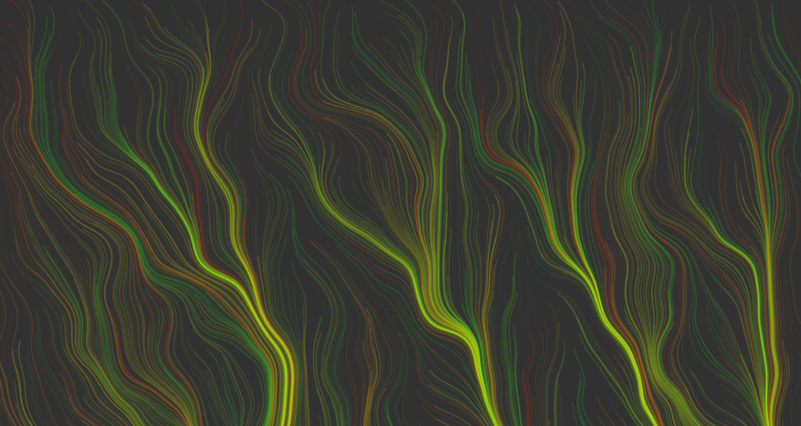
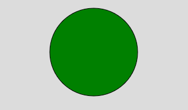

p5.js
By Francis, Matt, John
What is p5.js?
It is a JS Library that used mainly for Artist, Designers, and people in education. p5.js allows individuals to express their creativity using code!

Some p5.js features:
- Text
- Webcam
- Sound
Requirements for p5.js
1. HTML
<head>
<meta charset="utf-8" />
<!-- Required -->
<script src="https://cdnjs.cloudflare.com/ajax/libs/p5.js/1.9.0/p5.js"></script>
<!-- More p5.js options -->
<script src="https://cdnjs.cloudflare.com/ajax/libs/p5.js/1.9.0/addons/p5.sound.min.js"></script>
</head>
<body>
<!-- Required JS -->
<script src="sample.js"></script>
</body>
2. JavaScript
// https://p5js.org/get-started/
function setup(){
//Code in this block is run once
createCanvas(400, 400); //size of your canvas
}
function draw(){
//Code in this block is run constantly
background(220); //color from 0-255
}
Situations that is useful (Circle Example)

1. Vanilla
<!-- HTML and CSS -->
<div class="circleSample"></div>
<style>
.circleSample{
width: 5em;
height: 5em;
background-color: green;
border-radius: 50%;
}
</style>
2. p5.js
function draw(){
//Code in this block is run constantly
background(220); //color from 0-255
fill('green');
circle(20, 20, 20);
}
Where is it used usually?
p5.js is mainly used in academic and web design contexts. The majority of usescases are for unique and thoughtful audio/visual projects built with code.
Creative Coding
For those learning programming, this framework helps the focus be on what to code instead of how to code it.
Presentation Medium
Websites designed with p5.js make for a neat tool to present on a particular topic in a unique way.
Concept Visualization
In academic contexts, p5.js has several tools for visualization that help communicate concepts more effectively.
Education
General Artistic Expression
Offbeat/Hyperfuturistic Web Design
Similar/Competing frameworks

Processing
Processing is an open-source IDE that is also serves as a creative tool that is made by the the same people that made p5.js. Both share mostly the same purpose and have similar functions like setup() and draw(). The main difference being that it is Java-based programming environment whereas p5.js is a JavaScript library.
When should you use processing over p5.js
Unlike p5.js Processing is not a well suited for web application, it is optimized for desktop graphics, which can be preferrable for graphics-intensive applications. Additionally Processing has built-in support for Arduino implementation.

three.js
three.js is a JavaScript library to create 3D visualizations in web browsers. The workflow and learning curve of three.js is different from p5.js since you need some understanding of 3D graphic concepts.
When should you use three.js over p5.js
Obviously, you should use three.js if you would like to make 3D visuals. With three.js, you can work with WebGL features, allowing you to have optimized performance.
Code Demonstration
Matt Sample
Sample text: Sample
John Sample
The rocketship can shoot lasers via voice input, this does not work in embeded iframes, so to see that feature: Sample
Francis Sample
2D Rhythm Game: Sample